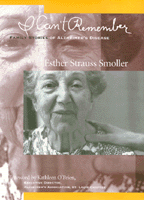

Photographs and personal stories of the everyday trials of Alzheimer's patients and their families
Photographs and personal stories of the everyday trials of Alzheimer's patients and their families


 Photographs and personal stories of the everyday trials of Alzheimer's patients and their families
Photographs and personal stories of the everyday trials of Alzheimer's patients and their families

|  |
I Can't RememberFamily Stories of Alzheimer's DiseaseEsther Strauss Smoller, foreword by Kathleen O'Briencloth EAN: 978-1-56639-555-7 (ISBN: 1-56639-555-0) |
I Can't Remember is an intimate photo essay of four families and their process of coping with Alzheimer's Disease—a process of coming to terms with the practical and emotional consequences of a disease that changes the entire family dynamic. Family members tell their stories of first denying that their loved one could be suffering from Alzheimer's, then dealing with the changing relationships among family members and the intensifying emotions, as old family troubles are stirred up and new feelings of despair and love appear.
Photographs and personal narratives are woven together to show both the unpleasant and the beautiful sides of the struggle for connection between spouses and across generations. Smoller has a gift for capturing people as they interact, whether it's arguing around the kitchen table or dancing cheek to cheek.
Each family's story is different, but all four families share common pain and frustration. A highway patrolman who has early onset Alzheimer's describes what it is like to have Alzheimer's. His wife tells a parallel story of life together after hearing the diagnosis. A daughter gives the following account of her mother: "I thought that it would be helpful if mother spent time in my home in Colorado. Before this visit, I was in denial, convinced that she suffered from depression and not Alzheimer's disease . . . . On the plane trip to Colorado, I was brought into the stark, cold reality that Mom had Alzheimer's. She did not know where she was or where she was going. Upon arrival, she did not recognize my home, although she had visited me numerous times in the past. She tried sleeping in the bathtub the first night."
Another daughter relates that she was unaware of the onset of Alzheimer's in her mother, because her mother was such a "wonderful actress." Eventually the memory problems were no longer confined to where things belonged in the kitchen, but extended into driving off at random, driving in circles in a parking lot in the middle of the night, or as much as 75 miles away from home.
I Can't Remember gives an intimate glimpse into the hearts and minds of caregivers and patients. Supportive social networks are essential for healthy life. This book provides the impetus caregivers need to develop contacts that can provide support. Smoller offers a glimpse of the frustration and losses faced by those who deal with Alzheimer's, as well as the potential to transcend those losses—even if only for a time—through love and hope.
Excerpt available at www.temple.edu/tempress
Foreward
Preface
1. A Daughter's Delemma
2. In Jim's Own Words
3. Jim's Wife Sherry's Story
4. Jean's Story
Usefull Organizations
Suggusted Resources
Esther Strauss Smoller is now a photographer after practicing psychotheraphy for thirty years.
Kathleen O'Brien is Executive Directorof the Alzheimer's Association, St. Louis Chapter.
Disability Studies
Family Policy
Art and Photography
© 2015 Temple University. All Rights Reserved. This page: http://www.temple.edu/tempress/titles/1357_reg.html.